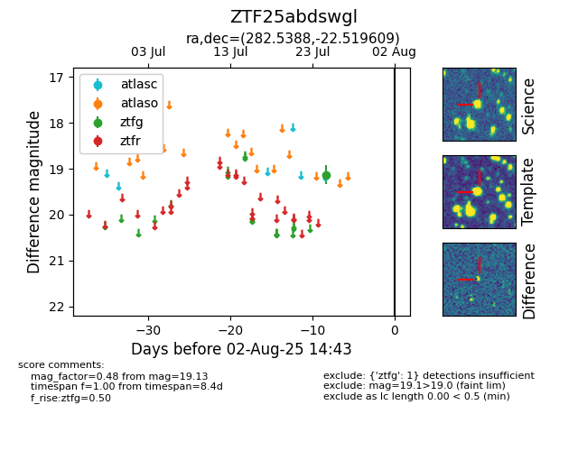

Target ZTF25abdswgl at 2025-08-06 17:45, see:
FINK: fink-portal.org/ZTF25abdswgl
Lasair: lasair-ztf.lsst.ac.uk/objects/ZTF25abdswgl
ALeRCE: alerce.online/object/ZTF25abdswgl
alt names
ZTF25abdswgl (ztf,fink)
coordinates:
equatorial (ra, dec) = (282.5388,-22.51961)
galactic (l, b) = (12.5489,-9.79020)
photometry
last ztfg=19.13
1 ztfg detections
